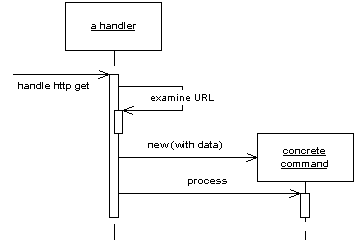

| Home | Articles | Talks | Links | Contact Me | ISA | ThoughtWorks |
A controller that handles all requests for a web site

In a complex web site, there are many similar things you need to do when handling a web request. These things include handling security, internationalization, providing particular views for certain kinds of users, etc. If the input controller behavior is scattered across multiple objects, then much of this behavior can end up duplicated, and it's difficult to change behavior at run time.
The Front Controller consolidates all of this by channeling all the requests through a single object. This handler can carry out common behavior which can be modified at runtime with decorators. The handler then dispatches to command objects for behavior particular to a request.
A Front Controller handles all calls for a web site. It's usually structured in two parts: a web handler and a hierarchy of commands. The web server software directs the http request to the handler. The handler pulls just enough information from the URL and request to decide what kind of action to initiate. The handler then delegates the request to a command, which usually isn't a web handler, to carry out the action ( Figure 1).
The web handler is almost always implemented as a class, rather than a server page, as it doesn't produce any response. The commands are also classes rather than server pages, and indeed don't need to be web handlers at all, although they are usually passed the http information. The web handler itself is usually a fairly simple program which does nothing other than decide which command should be run.
The web handler can make the decision of which command to run either statically or dynamically. The static version involves parsing the URL and using conditional logic to decide which command to run. The dynamic version usually involves taking a standard piece of the URL and using dynamic instantiation to create a command class.
The static case has the advantage of explicit logic, compile time error checking on the dispatch, and lots of flexibility in what your URLs look like. The dynamic case allows you to add new commands without changing the web handler.
Figure 1: How the front controller works
A particularly useful pattern to use in conjunction with Front Controller is Intercepting Filter, described in [Alur, Crupi, and Malks]. An intercepting filter is essentially a decorator that wraps the handler of the front controller. This allows you build a filter chain (or pipeline) of filters to handle different issues such as authentication, logging, locale identification. Using filters allows you to dynamically set up the filters to use at configuration time.
Rob Mee showed me an interesting variation of Front Controller using a two stage web handler. In this case the web handler is further separated into a degenerate web handler and a dispatcher. The degenerate web handler pulls the basic data out of the http parameters and hands it to the dispatcher in such a way that the dispatcher is completely independent of the web server framework. This makes testing easier because test code can drive the dispatcher directly without having to run in web server.
Remember that both the handler and the commands are part of the controller. As a result the commands can (and should) choose which view to use for the response. The only responsibility of the handler is in choosing which command to execute. Once it's done that, it plays no further part in that request.
The Front Controller is a more complicated design than the it's obvious counterpart, the Page Controller. It therefore needs a few advantages to be worth the effort.
Only one Front Controller needs to be configured into the web server, the web handler then does the rest of the dispatching. This simplifies the configuration of the web server, which is an advantage if the web server is awkward to configure. With dynamic commands you can add new commands without changing anything. It also eases porting, since you only have to register the handler in a web server specific way.
Since you create new command object with each request, you don't have to worry about making the command classes thread safe. This can avoid the headaches of multi-threaded programming. You do have to make sure that you don't share any other objects, such as the model objects.
A commonly stated advantage of a Front Controller is that it allows you to factor out code that's otherwise duplicated in the Page Controller. To be fair, however, you can also do much of this by using a superclass Page Controller.
Since there is just one controller, you can easily enhance its behavior at run time by using decorators. You can have decorators for authentication, character encoding, internationalization and add them either using a configuration file or even while the server is running. ([Alur, Crupi, and Malks] describe this approach in detail under the name Intercepting Filter.)
[Alur, Crupi, and Malks] gives a detailed description of how to implement Front Controller in Java. The also describe Intercepting Filter which goes very well with Front Controller.
A number of Java web frameworks use this pattern. An excellent example of this is Struts
Here's a simple case of using Front Controller for the original and innovative task of displaying some information about a recording artist. We'll use dynamic commands with a URL of the form http://loaclhost:8080/isa/music?name=astor&command=Artist. The command parameter tells the web handler which command to use.
Figure 2: The classes that implement Front Controller
We'll begin with the handler, which I've implemented as a servlet.
class FrontServlet...
public void doGet(HttpServletRequest request, HttpServletResponse response)
throws IOException, ServletException {
FrontCommand command = getCommand(request);
command.init(getServletContext(), request, response);
command.process();
}
private FrontCommand getCommand(HttpServletRequest request) {
try {
return (FrontCommand) getCommandClass(request).newInstance();
} catch (Exception e) {
throw new ApplicationException(e);
}
}
private Class getCommandClass(HttpServletRequest request) {
Class result;
final String commandClassName =
"frontController." + (String) request.getParameter("command") + "Command";
try {
result = Class.forName(commandClassName);
} catch (ClassNotFoundException e) {
result = UnknownCommand.class;
}
return result;
}
The logic is quite straightforward. The handler takes the command name and tries to instantiate a class named by concatenating the command name and "Command". Once it has created the new command it initializes it with the necessary information from the http server. In this case I've passed in what I need for this simple example, you may well need more - such as the http session.
If you can't find a command, I've used the Special Case pattern and returned an unknown command. As is often the case, using Special Case allows you to avoid a lot of extra error checking.
Commands share a fair bit of data and behavior. All of them need to be initialized with information from the web server.
class FrontCommand...
protected ServletContext context;
protected HttpServletRequest request;
protected HttpServletResponse response;
public void init(ServletContext context,
HttpServletRequest request,
HttpServletResponse response)
{
this.context = context;
this.request = request;
this.response = response;
}
They can also provide common behavior, such as a forward method, and define an abstract process command for the actual commands to override.
class FrontCommand...
abstract public void process()throws ServletException, IOException ;
protected void forward(String target) throws ServletException, IOException
{
RequestDispatcher dispatcher = context.getRequestDispatcher(target);
dispatcher.forward(request, response);
}
The command object is then very simple, at least in this case. It just implements the process method. This involves invoking the appropriate behavior on the model objects, putting the information needed for the view into the request, and then forwarding to a Template View.
class ArtistCommand...
public void process() throws ServletException, IOException {
Artist artist = Artist.findNamed(request.getParameter("name"));
request.setAttribute("helper", new ArtistHelper(artist));
forward("/artist.jsp");
}
The unknown command just brings up a boring error page.
class UnknownCommand...
public void process() throws ServletException, IOException {
forward("/unknown.jsp");
}
 |  |
{kind=link}